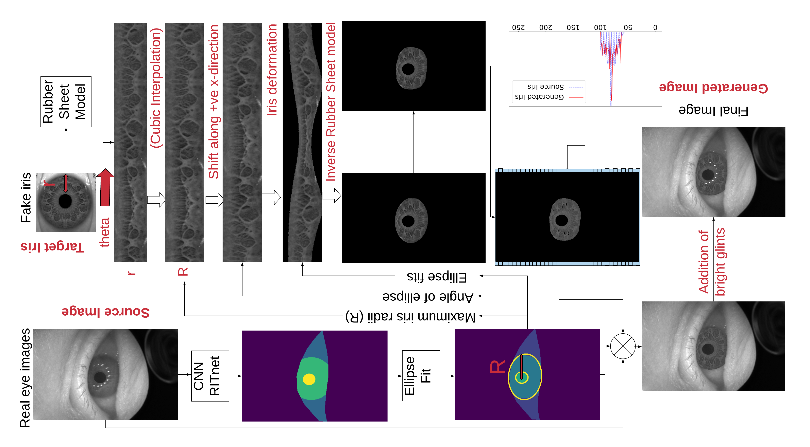
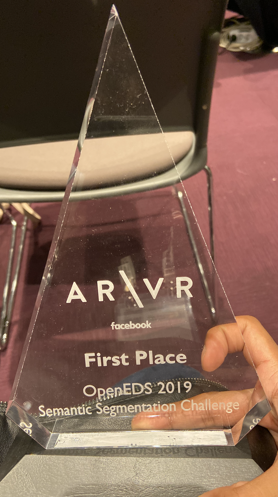
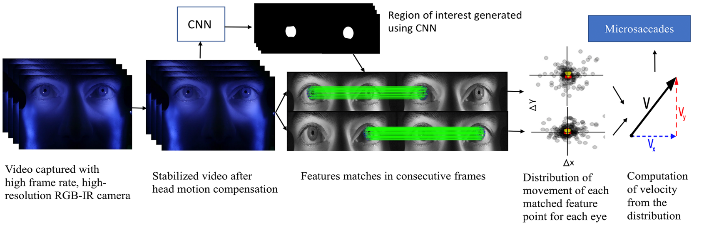

I am a fourth-year Ph.D. student at the Chester F. Carlson Center for Imaging Science, Rochester Institute of Technology (RIT). My Ph.D. with Prof. Jeff Pelz aims in developing methods and algorithms for reliable eye tracking. I am currently working on improving the precision and accuracy of the eye trackers using computer vision and machine learning algorithms. My Ph.D. attempts to study the feasibility of using textures of iris for gaze estimation.


